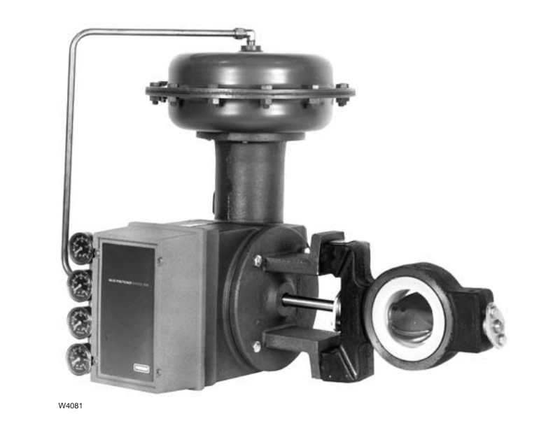

Butterfly Valves — Lined vs. High-Performance
Lined Butterfly — Tight Shutoff, Limited Range

Elastomer or TFE liner gives tight shutoff at low cost and protects the bore — but the same liner caps both pressure drop and temperature range
High-Performance Butterfly — Higher P/T Ceiling

Double-offset shaft pulls the disk clear of its seal on opening, letting a metal seal hold shutoff at temperatures a liner can't survive — but control range drops to roughly a third of a ball or globe valve's
After Fisher Control Valve Sourcebook — Power & Severe Service, 4th ed., Fig. 1-12 (left panel). Control Valve Handbook, 6th ed., Fig. 3.11 (right panel) — used directly. Component Index: pss-cmp-lined-butterfly-valve, cvh-cmp-high-performance-butterfly-valve.